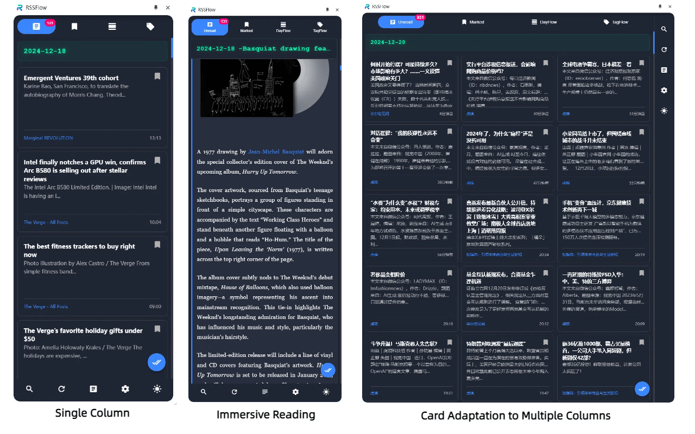

RSSFlow Reader
现代化、高效的 RSS 阅读体验，集成多个 AI 提供商的摘要生成功能
核心功能
智能 RSS 管理
支持多种 RSS 格式解析，智能处理内容编码，自动重试机制确保订阅源稳定性。
AI 文章摘要
集成 OpenAI、Google Gemini 和 SiliconFlow，自动生成文章摘要、关键词和观点分析。
多视图模式
支持全文/摘要视图切换，提供 DayFlow（按日期分组）和 TagFlow（按标签分组）等多种浏览模式。
高效阅读体验
支持键盘快捷键、木鱼阅读模式（标记已读时播放木鱼音效）、文章内容懒加载优化。
自动化功能
定期刷新获取最新文章，自动清理过期内容，后台更新未读计数。
用户体验优化
响应式设计适配不同屏幕，支持深色/浅色主题，实时搜索和过滤功能。
技术特点
- TypeScript 确保代码类型安全
- Chrome Extension API 实现浏览器扩展功能
- IndexedDB 提供高性能本地数据存储
- 多个 AI API 集成（OpenAI、Gemini、SiliconFlow）
- 现代化的 UI 设计和动画效果
功能展示


开始使用
立即体验现代化的 RSS 阅读方式
获取 RSSFlow Reader